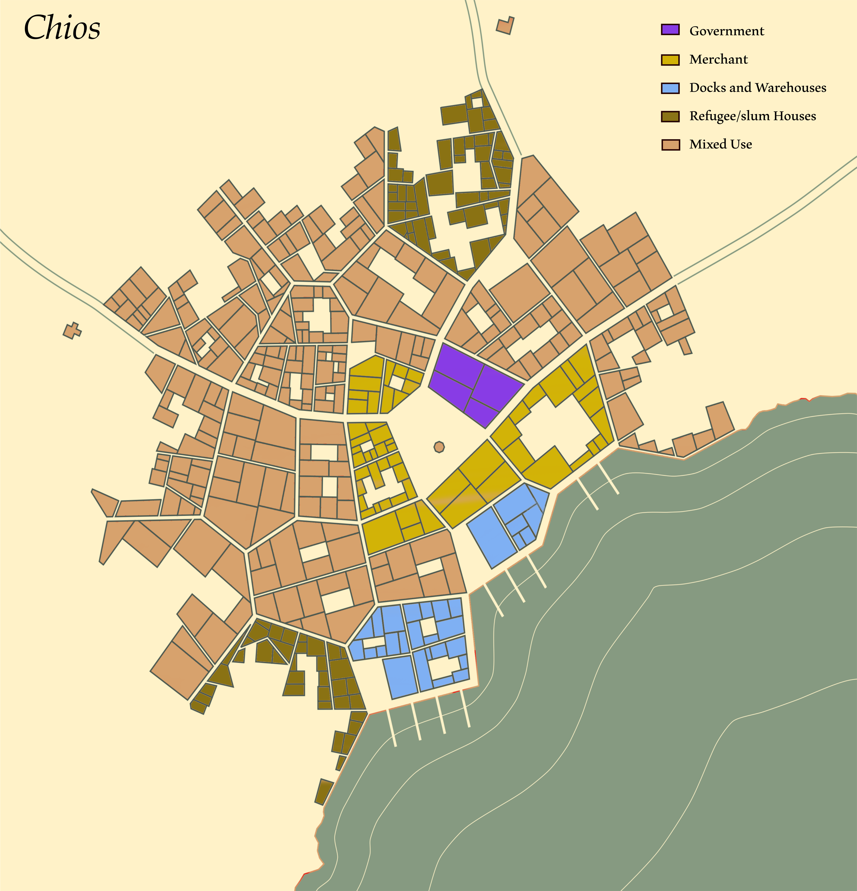

Chios is a small city located along the southern coast of Mairopy. Roughly 10,000 call it and the surrounding lands home. The city is largely comprised of fisherman and farmers scraping out a meager living as best they can. People are generally cheery, though the ever-worsening war to the north is beginning to concern the commonfolk.
The city is governed by a Mayor and his advisory Council. The Mayor is typically elected for a 10-year term (although mechanisms do exist to remove a Mayor, if need be) and their Council is appointed by said Mayor. All in Chios have the right to vote and nearly all exercise this right. The Mayor is responsible for overseeing everything from taxation to security, festivals to foreign policy. In practice, these tasks are often delegated to the Council while the Mayor becomes more of a ceremonial position.
In Chios, external forces have fostered a spirit of comradery that results in relatively view internal conflicts and practically zero crime. Whenever an incident does arise, the town guard has been able to handle it sufficiently. The Guard is purely part-time and largely amateur. They receive little arms and less training.
Geopolitically, the city is in a very precarious position. Both Kleran and Milinad have at various times claimed ownership over Chios, only to have their attentions diverted elsewhere by the war. All learned folk within Chios know the time is soon coming where an independent Chios will cease to be a possibility.
The Independent City of Chios
The city is governed by a Mayor and his advisory Council. The Mayor is typically elected for a 10-year term (although mechanisms do exist to remove a Mayor, if need be) and their Council is appointed by said Mayor. All in Chios have the right to vote and nearly all exercise this right. The Mayor is responsible for overseeing everything from taxation to security, festivals to foreign policy. In practice, these tasks are often delegated to the Council while the Mayor becomes more of a ceremonial position.
In Chios, external forces have fostered a spirit of comradery that results in relatively view internal conflicts and practically zero crime. Whenever an incident does arise, the town guard has been able to handle it sufficiently. The Guard is purely part-time and largely amateur. They receive little arms and less training.
Geopolitically, the city is in a very precarious position. Both Kleran and Milinad have at various times claimed ownership over Chios, only to have their attentions diverted elsewhere by the war. All learned folk within Chios know the time is soon coming where an independent Chios will cease to be a possibility.